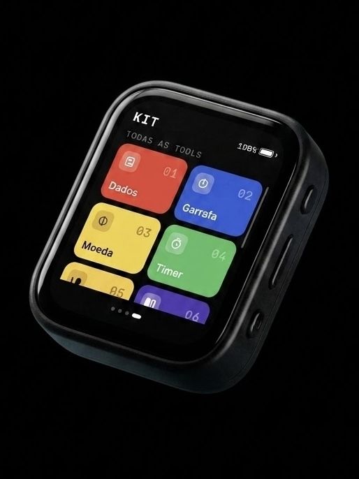

Quem começa? Deixa com o KIT.
Um aparelho de bolso, com tela de toque, pra rolar dado, sortear time, tirar no par ou ímpar, girar a garrafa e mais. Fica no meio da mesa e faz uma coisa de cada vez.

Serve pra
- Decidir quem começa
- Dividir os times
- Rolar os dados que sumiram
- Cara ou coroa, sim ou não
- Girar a garrafa
- Cantar o bingo
- Cronometrar a rodada
- Puxar papo com um quebra-gelo
Por que não é um app
Hoje quase tudo virou aplicativo. É prático, mas quando você pega o celular pra uma coisa boba ela divide a tela com mensagem, notícia e rede social, e quando vê já passou meia hora.
O KIT faz uma coisa só. Fica no meio da mesa, todo mundo enxerga e ninguém precisa desbloquear nada.
Como ter um KIT
Ainda não vendemos uma versão montada. Por enquanto você monta o seu, e é mais fácil do que parece: não precisa programar nada.
- Compre a placa. O KIT roda na Waveshare ESP32-S3-Touch-AMOLED-1.8. Custa menos que um jogo de tabuleiro.
- Ligue no computador com um cabo USB-C que transfira dados (nem todo cabo transfere).
- Clique no botão abaixo, escolha a placa na lista e espere. Em cerca de um minuto o KIT abre sozinho.
A instalação limpa a placa e coloca o KIT no lugar. Dá pra desfazer depois, é só instalar outra coisa.
A placa não aparece na lista
- Troque o cabo. Muito cabo USB-C só carrega e não transfere dados.
- No Windows, pode faltar um driver da placa (procure por CH34x ou CP210x).
- Segure o botão BOOT da placa, dê um toque no RESET e solte. Tente de novo.
- Feche outros programas que possam estar usando a placa.
Feito pra mexer
O KIT é livre e de código aberto. Quem programa pode criar funções novas, que a gente chama de Tools, e compartilhar com todo mundo. Está tudo no GitHub.
Tools pequenas entram pelo computador, sem cabo especial. As mais pesadas — com imagens, som, mais conteúdo — ficam num cartão microSD que você espeta na placa; o KIT lê sozinho.